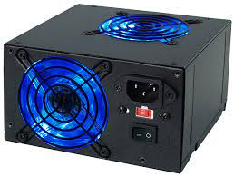

Fuente de Poder
Cuando se habla de fuente de poder, (o, en ocasiones, de fuente de alimentación y fuente de energía), se hace referencia al sistema que otorga la electricidad imprescindible para alimentar a equipos como ordenadores o computadoras. Generalmente, en las PC de escritorio, la ya citada fuente de poder se localiza en la parte posterior del gabinete y es complementada por un ventilador que impide que el dispositivo se recaliente.
La fuente de poder, por lo tanto, puede describirse como una fuente de tipo eléctrico que logra transmitir corriente eléctrica por la generación de una diferencia de potencial entre sus bornes. Se desarrolla en base a una fuente ideal, un concepto contemplado por la teoría de circuitos que permite describir y entender el comportamiento de las piezas electrónicas y los circuitos reales.
La fuente de alimentación tiene el propósito de transformar la tensión alterna de la red industrial en una tensión casi continua. Para lograrlo, aprovecha las utilidades de un rectificador, de fusibles y de otros elementos que hacen posible la recepción de la electricidad y permiten regularla, filtrarla y adaptarla a los requerimientos específicos del equipo informático.
Resulta fundamental mantener limpia a la fuente de poder; caso contrario, el polvo acumulado impedirá la salida de aire. Al elevarse la temperatura, la fuente puede sufrir un recalentamiento y quemarse, un inconveniente que la hará dejar de funcionar. Cabe resaltar que los fallos en la fuente de poder pueden perjudicar a otros elementos de la computadora, como el caso de la placa madre o la placa de video.
En concreto podemos determinar que existen dos tipos básicos de fuentes de poder. Una de ellas es la llamada AT (Advanced Technology), que tiene una mayor antigüedad pues data de la década de los años 80, y luego está la ATX (Advanced Technology Extended).
